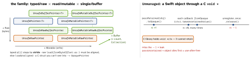
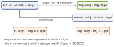

swift · folio
In one line: Unsafe = you, not the compiler, own lifetime,
initialisation, alignment, type binding and bounds. Reflection is
deliberately thin: metatypes are values (T.Type), Mirror only
reads stored properties, casts query runtime metadata.
Download PDF Print view LaTeX source


Pointers
- States:
allocate→initialize(to:)→ use →deinitialize(count:)(releases refs) →deallocate(). Skipping deinitialise on class refs = leak. - Scoped:
withUnsafePointer(to:),withUnsafeBytes(of:),withUnsafeBufferPointer— the pointer is valid only inside the closure (the value may move, COW-copy or die). Implicit&x/ array /Stringto a C param: valid for that call; keeping one draws a “dangling pointer” warning (5.2+). - Binding: memory is bound to one type at a time; typed access through an unrelated type = strict-aliasing UB.
bindMemory(to:capacity:)rebinds;withMemoryReboundrebinds for a scope (e.g.sockaddr_in→sockaddr);assumingMemoryBound(to:)only asserts, unchecked. For reinterpretation, prefer raw +load(as:). - No bounds checks on
p[i]/buf[i]in release. C fixed arrays import as tuples;withExtendedLifetime(obj)stops ARC releasing an object whose pointer C still uses. Unmanaged<T>: manual retain counts acrossvoid *. CF naming rule: Create/Copy returns +1 →takeRetainedValue(); Get →takeUnretainedValue().
Example — C callback with context
final class Counter { var hits = 0 }
let ctx = Unmanaged.passRetained(Counter()).toOpaque() // +1
register_cb({ raw in // @convention(c): no captures
let c = Unmanaged<Counter>.fromOpaque(raw!)
.takeUnretainedValue() // +0 borrow
c.hits += 1 }, ctx)
// later, exactly once:
Unmanaged<Counter>.fromOpaque(ctx).release() // -1
var n: UInt32 = 0xDEADBEEF
let b = withUnsafeBytes(of: &n) { Array($0) } // EF BE AD DEWhen to reach for it
C/C++ interop, zero-copy binary parsing, a measured hot loop. Keep it small, audited, behind a safe API. Swift 6.2’s Span/RawSpan are bounds-checked, non-escaping views that replace many withUnsafe… uses.
Metatypes

Reflection & casts
T.selfis the value ofT.Type: callstaticmembers andrequired initthrough it (decode(User.self, from:)).AnyClass=AnyObject.Type;ObjectIdentifier(T.self)keys by type.some P= one hidden type, static;any P= box.Mirror(reflecting:):children(label, value),displayStyle,superclassMirror(inherited props). Stored properties only — no methods, computed props, setting or construction. Slow;dump()uses it.is/as?: classes walk the superclass chain; protocols look up conformance records (cached, first lookup slow). Casts see throughOptionalinsideAny;IntinAnyis not aDouble;as? any Sequenceworks since 5.7,any Collection<Int>needs the iOS 16 runtime.
Traps
withUnsafePointer(to: &x) { $0 }— returns a dangling pointer. Do the work inside, or copy out.sizeinstead ofstridefor pointer maths;withUnsafeBytesis host (little-endian) order — use.bigEndianfor the wire.x as? AnyObjectalways succeeds (boxes a struct).is Dogincludes subclasses; comparingtype(of: x)toDog.selfis exact.- Mirror for serialisation or setting — use
Codable, key paths.
Remember
“Typed? Mutable? Buffer? — then: in scope, initialised, bound, aligned, in bounds.” Metatype is a value; Mirror only reads.